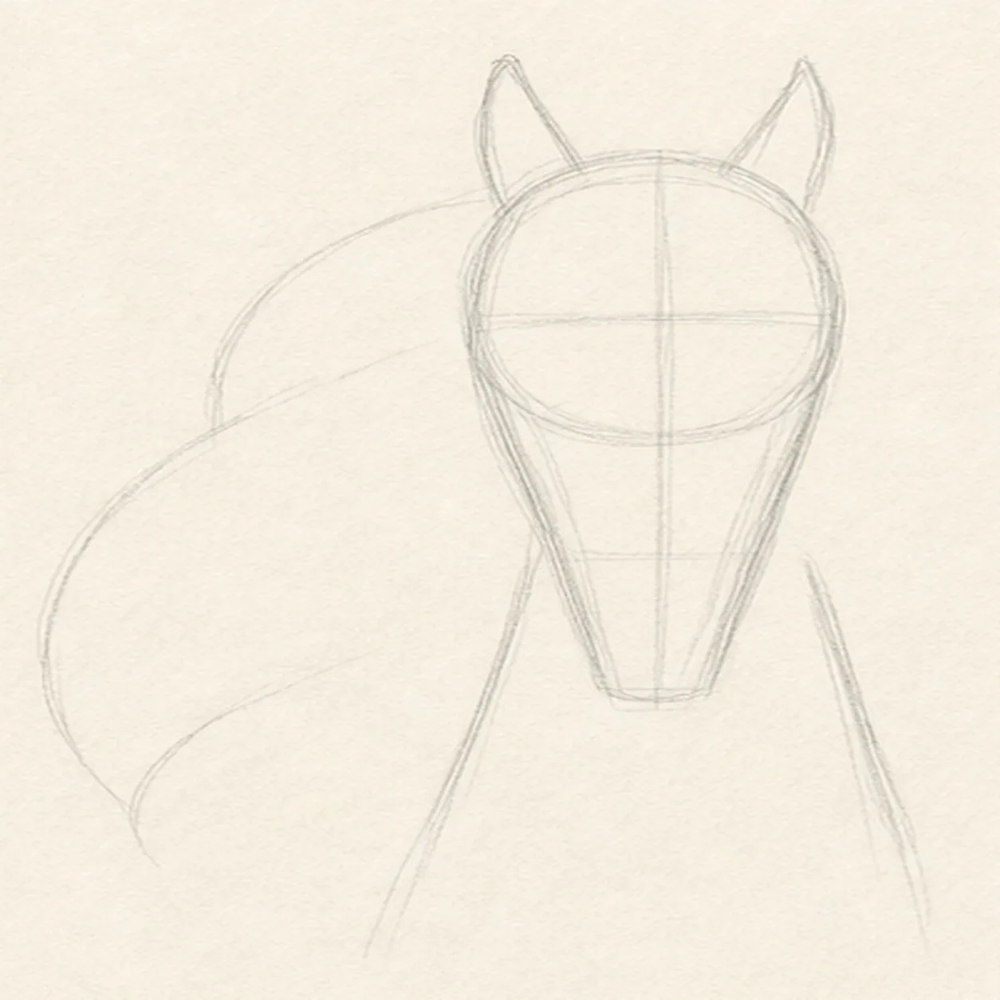
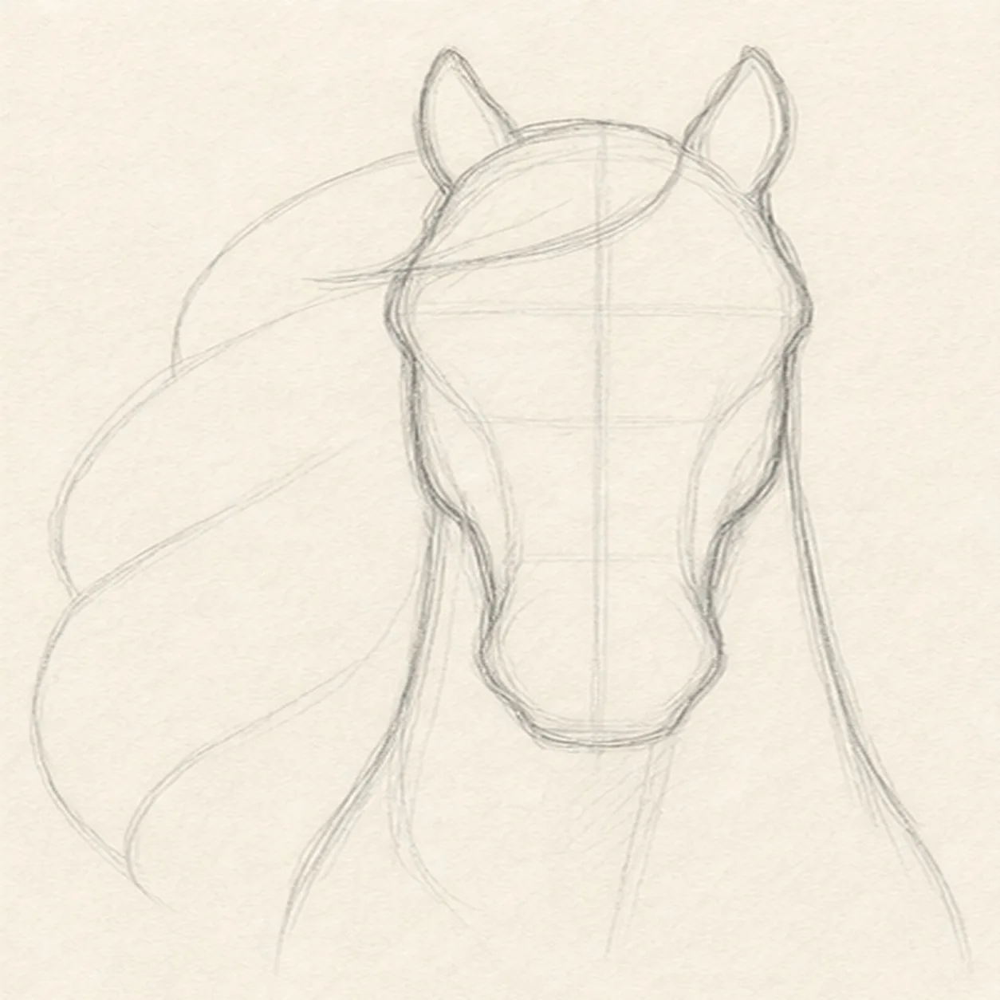
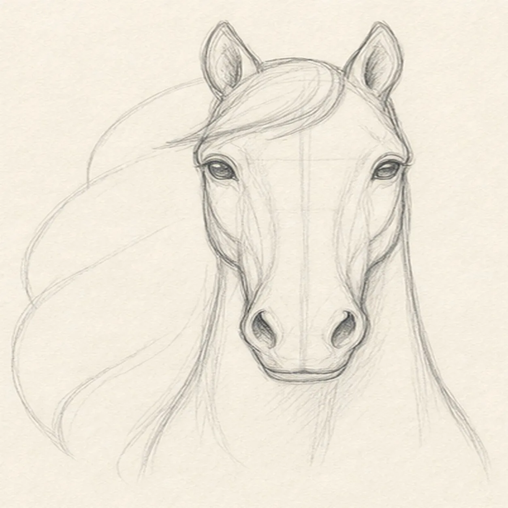
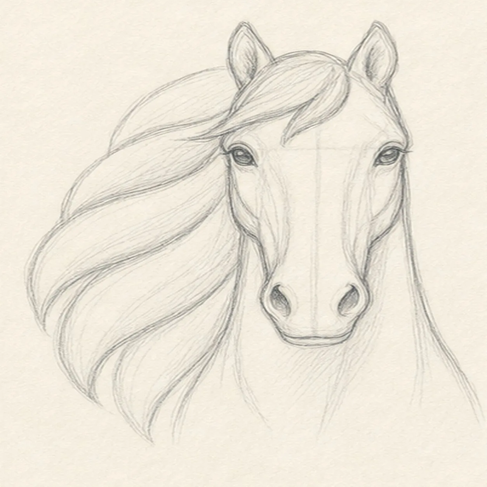
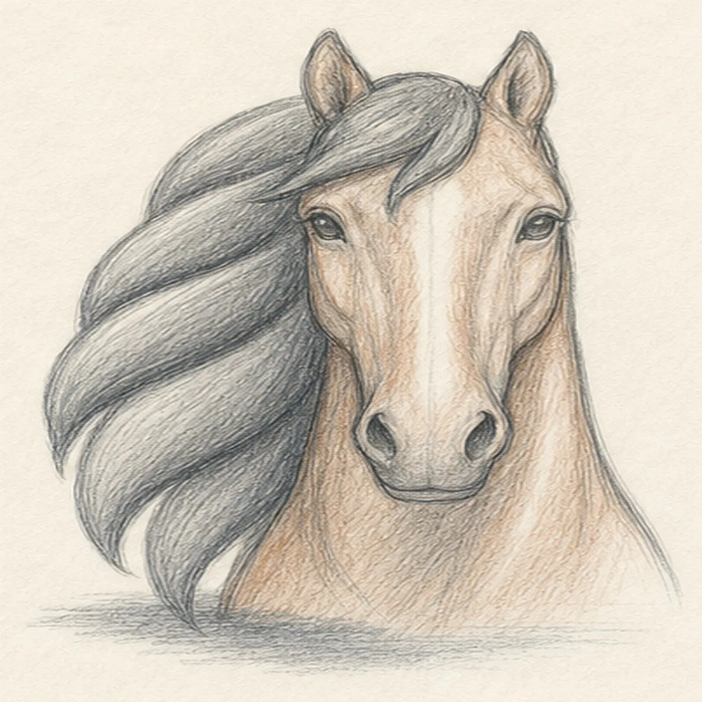

From the archive
Let's draw a horse head with a flowing mane
Treat this as one small practice round: build the subject lightly, notice the shapes, then darken only the lines that help the finished sketch.
-
01

Set the head axis
Draw a pale center axis, cranium oval, and tapered muzzle wedge, then place two neck curves, exactly two ear guides, and a large left-side reserve for the flowing mane.
Sketch tip: Ghost the center axis and muzzle taper before touching down. Compare the two empty cheek wedges on either side of the muzzle; keeping them close in size will steady the near-front view.
-
02

Wrap the horse silhouette
Wrap the guides with the forehead, cheeks, long muzzle, exactly two ears, neck, forelock area, and the full left-swept mane boundary.
Sketch tip: Rotate the page for the long cheek curves and break the neck edge where it passes behind the reserved mane. Keep the muzzle narrower than the cranium instead of drawing two stacked rectangles.
-
03

Place the horse's features
Add exactly two almond eyes, two nostrils, one mouth seam, the jaw planes, and both ear interiors to the existing head.
Sketch tip: Use the center axis to compare eye height and nostril spacing. Darken the upper eyelids more than the eyeballs so the gaze stays calm rather than glossy.
-
04

Sweep the mane into groups
Divide the reserved mane into one forelock and exactly four broad flowing locks, keeping every lock attached to the same outer boundary.
Sketch tip: Ghost each S-curve two or three times, then draw it in one relaxed pass. Vary the widths and leave slim paper channels between locks so the mane reads at thumbnail size.
-
05

Model the planes and color
Shade the established face planes and mane with graphite, add restrained chestnut pencil to the head and neck, preserve paper highlights, and place one broken blue-gray shadow below.
Sketch tip: Pull pencil strokes with the muzzle and neck instead of scribbling across them. Keep the mane darker than the face, then lift the pencil before the paper tooth disappears.
-
06

Settle the flowing finish
Strengthen the keeper contours and clarify the established two ears, two eyes, two nostrils, mouth seam, forelock, four mane groups, graphite planes, restrained color, highlights, and shadow.
Sketch tip: Count two ears, two eyes, two nostrils, one forelock, and four broad mane locks, then stop. Your mane rhythm and horse color can change while the same simple head construction stays useful.